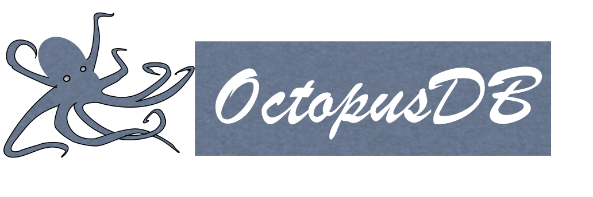

This page describes my contributions to OctopusDB. See the detailed webpage at Saarland University here.The last decade has seen a proliferation of software systems for storing and managing large collections of data. These different systems are targeted at different types of data, or different data access patterns; examples include: transactional applications, such as banking (OLTP), analytical and reporting applications, such as finding the most popular items that have sold in a retail store (OLAP), as well as systems specialized for streaming (real-time), social networks and other graphs, and data archives. This is a sharp change from just a few decades ago where all applications were supported by monolithic data management systems (e.g., Oracle, or DB2). This proliferation of systems has occurred because it delivers significantly better performance. However, end users now need to pick the right data management system for their query workloads.
Furthermore, modern enterprises typically see a variety of query workloads. For instance, a banking enterprise uses a transactional system for customer banking transactions, an analytical system for business intelligence, a streaming system for stock trading, and an archival system to meet regulatory requirements for data retention. As a consequence, today's companies have to manage and integrate several types of data management systems, which is tedious, expensive, and counter-productive for their business.
Our vision is a highly flexible data managing system, which automatically sets the initial configuration and adapts to changing workload later on, with improved performance, lowered cost and better maintainability. This vision for a new system, coined OctopusDB, initially stores a log or journal of data operations. Thereafter, depending on the workload, OctopusDB creates arbitrary physical representations, called Storage Views, of that journal. As a result of this flexible data storage layer, OctopusDB can mimic a variety of systems and efficiently support dynamic query workloads.
Publications
-
Felix Martin Schuhknecht, Alekh Jindal, Jens Dittrich
An Experimental Evaluation and Analysis of Database Cracking
The VLDB Journal, August 2015
Special Issue on best papers of VLDB 2014 -
Felix Martin Schuhknecht, Alekh Jindal, Jens Dittrich
The Uncracked Pieces in Database Cracking
VLDB 2014/PVLDB, Hangzhou, China. [Source Code]
Best Paper Award -
Alekh Jindal, Endre Palatinus, Vladimir Pavlov, Jens Dittrich
A Comparison of Knives for Bread Slicing
VLDB 2013/PVLDB, Riva, Italy. -
Alekh Jindal, Jorge-Arnulfo Quiane-Ruiz, Jens Dittrich
WWHow! Freeing Data Storage from Cages
CIDR 2013, Asilomar, USA. -
Alekh Jindal, Felix Martin Schuhknecht, Jens Dittrich, Karen Khachatryan, Alexander Bunte
How Achaeans Would Construct Columns in Troy
CIDR 2013, Asilomar, USA. -
Alekh Jindal, Jorge-Arnulfo Quiane-Ruiz, Jens Dittrich
Trojan Data Layouts: Right Shoes for a Running Elephant
ACM SOCC 2011, Cascais, Portugal. -
Alekh Jindal, Jens Dittrich
Relax and Let the Database do the Partitioning Online
VLDB BIRTE 2011, Seattle, USA. TR -
Jens Dittrich, Alekh Jindal
Towards a one-size-fits-all Database Architecture
CIDR 2011, Outrageous Ideas and Vision Track, Asilomar, USA.
Best Outrageous Ideas and Vision Paper Award (CCC Blog) -
Alekh Jindal
The Mimicking Octopus: Towards a one-size-fits-all Database Architecture
VLDB 2010 PhD Workshop, Singapore.
{kind=link}
{kind=link}
Talks and Posters
-
Research Summary
Presenter: Alekh Jindal
Database Group Meeting 2013, MIT, USA. -
How Achaeans Would Construct Columns in Troy
Presenter: Jens Dittrich, Slides: Alekh Jindal
CIDR 2013, Asilomar, USA. -
OctopusDB: Flexible and Scalable Storage Management for Arbitrary Database Engines
Presenter: Alekh Jindal
PhD Defense 2012, Saarbruecken, Germany. -
Relax and Let the Database do the Partitioning Online
Presenter: Stefan Schuh, Slides: Alekh Jindal
VLDB BIRTE 2011, Seattle, USA. -
A Database System for Managing Multimodal Data (Poster)
Presenter: Alekh Jindal
MMCI Annual Meeting 2010, Saarbruecken, Germany. -
The Mimicking Octopus: Towards a one-size-fits-all Database Architecture
Presenter: Alekh Jindal
VLDB PhD Workshop 2010, Singapore. -
OctopusDB: Towards a one-size-fits-all Database Architecture
Presenter: Alekh Jindal
Qualifying Examination 2010, Saarbruecken, Germany.
Patent
-
Jens Dittrich, Alekh Jindal
A method for storing and accessing data in a database system.
US Patent US20130226959 A1